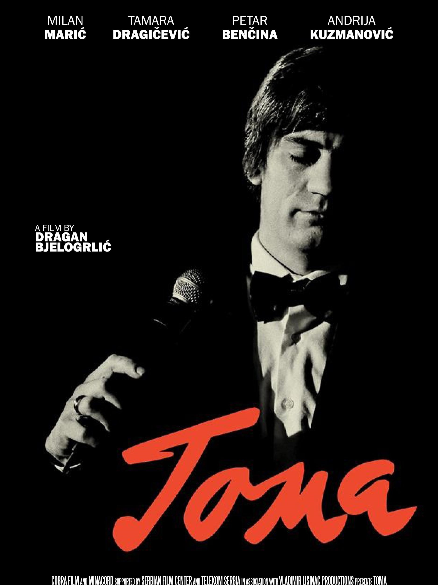

2h55m
9.2
gledaj
skini
Po povratku iz Drugog svetskog rata , Michael Corleone ( Al Pacino ) ima dve stvari na umu : želi se odmoriti od ratnih strahota i nipošto ne želi da uđe u porodični posao , što , naravno , nije po volji njegovom ocu , mafijaškom donu Vitu Korleoneu ( Marlon Brando ) . Don Vito je dobar i obziran prema onima koji ga poštuju , ali nasilan i nemilosrdan kada se nešto ispreči blagostanju njegove porodice . Smatrajući kako se stari kodeksi časti trebaju nastaviti poštovati i slediti kao najbolje uputstva uspešnog poslovanja , don Vito se sukobljava sa rivalima koji planiraju započeti unosan posao rasturanja droge . Sukob koji će ta suprotstavljena viđenja mafijaškog posla i odgovornosti izazvati biće jako krvav , a posebnu cenu platiće Michael , odnosno njegovi snovi i želje . Nakon što don Vito preživi pokušaj atentata , Michael zna kako više ne sme da stoji po strani.

3h22m
9.0
gledaj
skini
Drugi deo najslavnije mafijaške sage svih vremena paralelno pripoveda dve radnje, u dva različita prostorno-vremenska sklopa. Jedna se događa 1958. godine, kada Don Mikel Korleone (Al Paćino) nastavlja voditi porodično carstvo, koje želi proširiti kako na nova polja ljudskog delovanja, tako i na druge lokacije, uključujući Las Vegas, Holivud i Kubu. Uz razne poslovno-političke probleme, Mikel mora rešavati i situaciju unutar porodice, pogotovo kod svoje sestre Konie (Talia Šire), koja se vrlo brzo nakon razvoda planira ponovno venčati, za čoveka koji se Mikelu nimalo ne dopada. Kada postane metom pokušaja ubistva, koji ipak preživi, Mikel shvata kako ne smije verovati apsolutno nikome, čak ni onima za koje je mislio da su mu najbliži.
Paralelno toj priči, pripoveda se i o detinjstvu i mladosti začetnika loze Korleone, Vita (Robert De Niro). Nakon odrastanja na Siciliji, 1917. godine 25-godišnji Vito živi u Njujorku gde radi u maloj trgovini, ali polako počinje ulaziti u vode sitnoga kriminala. Nekoliko godina kasnije, kvartovski zaštitnik Don Fanuči postaje svestan aktivnosti Vitove grupe i traži da mu plate određeni postotak u zamenu za mir. Vito naizgled pristaje, ali tokom kvartovske proslave ubija Fanučija i uzima svoj novac natrag. Taj mu čin donese i naklonost čitavog komšiluka, čime počinje prvo poglavlje uspona porodice Korleone.

2h42m
7.6
gledaj
skini
Priča počinje 1979. u Njujorku, klasičnim porodičnim okupljanjem, dvadesetak godina nakon što je Majkl Korleone (A. Paćino) naredio ubistvo svog brata. Dvoje Majklove dece -Meri (S. Kopola) i Entoni sada su odrasli. Entoni želi da bude operski pevač te se ne želi upletati u porodične"poslove", dok je Meri odana ocu. On se protivi njenoj vezi sa rođakom Vinsentom Manćinijem (A. Garsija), Sonijevim sinom, koji čeka priliku da postane sledeći don, sa svim žarom i zanesenošću kakvu je nekad posedovao ne samo njegov otac, već i Majkl. U međuvremenu Majkl pokušava legalizovati neke svoje poslove, što nailazi na otpor nekih drugih "porodica" koje žele deo svog kolača ...

Once Upon a Time in America
1984
3h49m
8.3
gledaj
skini
Veličanstvena priča u kojoj pratimo životni put dva problematična dečaka. Jevrejskim krajem Njujorka 20-tih godina prošlog veka vladaju bande, među kojima je i banda na čijem čelu su sitni prestupnici, dečaci Maks i Nudls. Prijatelji zajedno odrastaju i zaklinju se jedan drugom na večno prijateljstvo i vernost.
U vrijeme prohibicije sve više se uvlače u kriminalni milje, a posle jednog mafijaškog obračuna Nudls završava u zatvoru. Po izlasku iz zatvora već kao starac, vraća se u rodni kraj i priseća se svog detinjstva i mladosti, doba dečjih bandi, prohibicije i mafijaških obračuna u Njujorku. Seća se događaja koji su ga naterali u progonstvo, stradanja svojih prijatelja i naglog prekida dečačke romanse sa Deborom..
2h50m
8.3
gledaj
skini
Američki film iz 1983. godine, koji je režirao Brajan de Palma. Ostvarenje prati uspon i pad gangstera Tonija Montane, koji kao siromašni kubanski imigrant dolazi na Floridu i počinje da gradi kriminalnu karijeru, polako preuzimajući lokalnu trgovinu drogom.
Kao inspiracija poslužio je istoimeni film iz 1932. godine, baziran na životu Al Kaponea, zloglasnog američkog gangstera koji je imao nadimak "Scarface".
2h26m
8.7
gledaj
skini
Scorseseov epohalni film o mafijašu koji je svjedočio protiv svojih partnera u zločinu jedan je od najboljih filmova devedesetih, ali i svih vremena. Strpljivo prateći uspon jednog mafijaša, legendarni filmaš nemilosrdno secira sve slojeve društva i prikazuje ustroj mafije bez imalo uljepšavanja i lažnog zanosa.
Pedesete u New Yorku; ako ste trinaestogodišnjak koji priželjkuje brze automobile i zgodne djevojke, samo je jedan pravi, najbrži način za postignuće vaših snova, a naziva se - mafija. Mladi Henry Hill (Ray Liotta) pridružuje se toj zloglasnoj organizaciji i uskoro stječe sve o čemu je maštao; žene, automobile, novac i poštovanje. Njegovi su najbliži suradnici usijani Tommy DeVito (Joe Pesci) i staloženi Jimmy Conway (Robert De Niro). Taj je trojac strah i trepet u kvartu, a novac, uz redovite prihode od reketarenja i ostale mafijaške aktivnosti, zarađuje i prodavanjem narkotika. No kada Henry prvi put dospije u nevolju i iskusi život iza rešetaka, shvaća da je blagostanje jednog mafijaša vrlo nestalno; bivše kolege gledaju ga sa sumnjom i vječitim pitanjem u očima: "Jesi li nas cinkao", a izolacija tjera na nove načine zarade. Dan za danom, Henry je pod sve većim stresom i u većim nevoljama, a jedini izlaz iz slijepe ulice nazire se u suradnji s policijom... Glasoviti Scorseseov film osvojio je pet nominacija za nagradu Oscar, a Joe Pesci trijumfirao je nagradom za najbolju sporednu ulogu. Robert De Niro briljirao je kao okrutni gangster Jimmy Conway, a Ray Liotta pokazao se savršenim izborom za mafijaša koji svaki dan živi na rubu živčanog sloma. Za razliku od većine filmova koji se bave isječcima iz života, Scorcese zahvaća monumentalnom silinom i uspijeva u naizgled nemogućoj nakani: prikazati život jednoga gangstera od početka pa gotovo do kraja, od uvodnih susreta koji nalikuju prvoj ljubavi do gorkih razočaranja kakva može donijeti samo pripadnost mafijaškoj organizaciji.
Lokalni mafijaš kikapo Sisero I njegov saradnik Džimi Konvej mu pomažu u karijeri, a njihovo potpuno poverenje zadobija kada sa aerodroma JFK krade deo tereta vrednog nekoliko milijardi dolara. Ali Henri zna da nikad ne može da postane ravnopravni član porodice zbog svog jevrejskog porekla. Što je stariji, poslovi su sve rizičniji, saradnici I njegovi postupci neporomišljeni, a neprijatelji sve opasniji.

1h36m
8.1
gledaj
skini
Sedmi pečat je film Ingmara Bergmana iz 1957. Priča prati viteza koji na putu kroz srednjovjekovnu Švedsku preispituje vlastitu vjeru i pokušava pronaći Boga i smisao postojanja. Film je poznat po scenama u kojima vitez igra šah protiv Smrti kako bi produžio vlastiti život. Naslov je preuzet iz Biblije (Apokalipsa), a cijeli citat se tijekom radnje nekoliko puta spominje. 1957. na festivalu u Cannesu dobio je posebnu nagradu žirija. Iste godine Bergman je objavio Divlje jagode, također vrlo uspješan film slične tematike.
Sredinom 12. stoljeća, vitez Antonius Block (Max von Sydow) i njegov štitonoša su se vratili u Švedsku nakon desetogodišnjeg križarskog pohoda. Zemljom hara kuga, a Antonius brzo otkriva da je Smrt (Bengt Ekerot) došla i po njega. Kako bi dobio na vremenu, i uspio se vratiti kući, izaziva Smrt na višednevnu partiju šaha. Usput igrajući šah, putuje zemljom i pokušava dokučiti postojanje Boga i smisao vlastitog života. Vjera mu je potresena, a dodatno ju potkopavaju događaji iz okoline i cinični štitonoša.
Putem nailaze na razne likove i pojave srednjovjekovnog života: flagelante, spaljivanje vještice, ljudsku okrutnost i ljubavne jade; vrlo je naglašena kritika svećenstva koje se služi strahom da bi kontroliralo narod. Antonius sve više sumnja u postojanje Boga i boji se ništavila koje možda slijedi nakon smrti. Očaju viteza i ogorčenosti štitonoše, suprotstavljena je sreća i duhovnost bračnog para putujućih zabavljača. Pri završetku šahovske partije, Antonius nadmudruje Smrt i omogućuje spas mladom paru. Dok su vitez i ostatak družine uvučeni u ples smrti, njih dvoje nastavljaju svoje putovanje.

2h27m
7.7
gledaj
skini
"Doni Brasko" je kriminalistički film temeljen na stvarnim doživljajima Josepha D. Pistonea, agenta FBI-ja koji se uspešno infiltrirao u kriminalnu porodicu Bonnano, jednu od pet mafijaških porodica u New Yorku tokom sedamdesetih...
Mladi draguljar Doni Brasko (Johnny Depp) dolazi u njujorški kafić gde se okupljaju mafijaši. Tamo na sebe skrene pažnju Leftyju Ruggieriju (Al Pacino), ostarelom mafijaškom ubici koji odluči da ga regrutuje za svoje prljave poslove. Ruggieri postane mentor Brasku pa ga uključi u mafijašku bandu koju vodi Sony Black (Michael Madsen). Niko od njih ne sluti da je Brasco ustvari samo pseudonim Joea Pistonea, agenta FBI-a koji je ubačen u mafiju s ciljem da razotkrije njene operacije.
2h33m
8.3
gledaj
skini
Nemi film Metropolis remek-delo je nemačkog redatelja Fritza Langa (Ministarstvo straha, Ubica M) i jedan od najuspešnijih i najslavnijih ekspresionističkih filmova ikad snimljen. Raskošno produciran (u slavnom studiju Babelsberg, bio je najskuplji snimljeni film u međuratnoj Nemačkoj), izvanredno snimljen, sjajne ekspresionističke scenografije i kostimografije, film je stilski udario temelje ovome žanru. U glavnim ulogama nastupaju tada slavni nemački glumci B. Helm, G. Froehlich i ostali.
U dalekoj budućnosti, super moderan grad Metropolis dom je dvema klasama: onima jako bogatim koji provode dane u dokolici te robovima koji u podzemlju grada rade na strojevima. Sin najbogatijeg čoveka Metropolisa, Freder Fredersen (G. Froehlich), deo je toga društva. Jednog dana uoči lepu devojku (B. Helm) okruženu siromašnom decom, no oni brzo nestanu.
Opsednut onim što je video, Freder je odluči pronaći. Tako dospe u podzemni svet i prenerazi se kada shvati u kakvoj bedi žive radnici. Samo nekoliko ljudi zna kako funkcionira Metropolis, a jedan od njih je i Frederov otac (A. Abel), no o tome nikada nisu razgovarali...

1h52m
7.2
gledaj
skini
"Fahrenheit 451" intrigantan je film o mračnoj budućnosti, adaptiran po istoimenom romanu iz 1953. godine, poznatoga znanstveno-fantastičnoga pisca Raya Bradburyja. S vremenski neodređenom radnjom u svijetu u kojemu su knjige i bilo kakvi drugi pisani tekstovi zabranjeni, a individualna misao praktički ne postoji, film prati glavnoga junaka, jednoga od najboljih vladinih "palitelja", koji postupno postaje svjestan vrijednosti knjiga i odluči promijeniti vlastiti život. Film je režirao François Truffaut (400 udaraca, Američka noć), a to je njegov jedini film snimljen na engleskom jeziku.
Guy Montag (O. Werner) radi kao palitelj knjiga unutar asocijalnog, izoliranog društva u kojemu su knjige protuzakonite zbog toga što se vlast boji da mogu utjecati na razvoj neovisnog mišljenja. Zadatak "palitelja" je spaliti sve knjige koje pronađu i kazniti ljude koji ih tajno čitaju. Ljudi njegova društva, uključujući i njegovu suprugu, žive kao zombiji, a obavještavaju se samo preko velikog kućnog ekrana. Montag se zaljubi u svoju susjedu Clarissu (J. Christie) koju upozna u tramvaju. Ona je jedna od tajnih čitateljica, pa i on ukrade knjigu i počne čitati. Kroz ovu vezu on počinje preispitivati vladine motive za zabranu knjiga...

1h35m
9.0
gledaj
skini
Odbrana i optuzba su zavrsile sa poslom i porota je poslata u posebnu sobu kako bi mogli odluciti da li je mladi i siromasni muskarac, meksickog porekla, odgovoran za ubistvo oca. Ono sto se cini lakom odlukom uskoro postaje oluja osecaja u kojoj dolaze na videlo sve mane i predrasude porotnika. Jedini koji se suprostavlja smrtnoj kazni i koji sumnja u dokaze koje je predocila optuzba je porotnik broj 8.
Iako je bio vrlo hvaljen od strane kritičara film nije postigao veći uspjeh na kino blagajnama. Unatoč tome smatra se jednim od najboljih filmova svih vremena. Porotnik broj 8 uvršten je na listu "100 najvećih filmskih heroja" Američkog Filmskog Instituta.
1h30m
6.9
gledaj
skini
Distopijski znanstvenofantastični film prati život Winstona Smitha, državnog službenika niskog ranga u ratom razorenom Londonu pod vlašću Oceanije, totalitarne naddržave. Smith (J. Hurt) trudi se da zadrži zdrav razum i dodir sa stvarnošću jer golema moć i utjecaj režima progone individualizam i individualno razmišljanje na političkoj i osobnoj razini...
Film je posvećen Richardu Burtonu i zadnji je koji je glumac snimio. Nominiran je za nagradu BAFTA u kategoriji za najbolju scenografiju, a osvojio je i dvije nagrade Evening Standard British Film Awards za najbolji film i najboljega glumca.
Snimljen je prema istoimenom romanu Georgea Orwella.

The Wolf of Wall Street
2013
3h00m
8.2
gledaj
skini
Film je baziran na memoarima Džordana Belforta koji je preko svoje brokerske kuće Stratton Oakmont prevario investitore za gotovo sto miliona dolara. Leonardo je narator ove priče i u nekoliko navrata se obraća kameri. Belfort je bio vrlo uspešan u pranju novca i vrlo vešt i inteligentan govornik. Nezasitan apetit za novcem je hranio ne samo preko onih malo imućnijeg novčanog statusa već i onih siromašnijih kojima je vrlo vešto prodavao “maglu“ kao sigurnu zaradu. Već sa 26 godina postao je multimilioner, zaradu je trošio na sve što je poželeo, skupocene kuće, jahte, automobile, striptizete, putovanja, apsolutno na sve što ga je činilo srećnim i uvek je želeo više. Neizostavan deo njegovih razvratnih zabava činile su nezamislive količine kokaina i narkotika, litre alkohola i mnogo striptizeta, pa su te zabave često prelazile u orgije. U stopu su ga pratili njegovi prijatelji iz detinjstva koji su takođe bili i zaposleni u njegovoj brokerskoj kući. Iako se oženio i dobio dete i dalje je nastavio sa svojim raskalašnim životom. Ipak, jednog dana sve kreće nizbrdo i njegova priča završava zatvorskom kaznom u trajanju od 22 meseca.

2h20m
8.8
gledaj
skini
Film “TOMA” je jedan impresionistički portret Tome Zdravkovića koji prikazuje same njegove početke, baš kao i vrhunac slave, njegove ljubavi koje su ga inspirisale prilikom komponovanja nekih od najvećih hitova, baš kao i odnos sa velikim brojem prijatelja koje je imao u umetičkom miljeu tadašnje Jugoslavije. Pored Tome, kroz film ćemo pratiti i živote poznatih umetnika tog vremena: Zorana Radmilovića, Mike Antića, Tozovca i drugih. “TOMA” je biografski film o Tomi Zdravkoviću, čoveku koga ne pamtimo samo po njegovim pesmama i načinu na koji ih je pevao, već i kao jednog velikog boema - po ponašanju i u duši. Film prati dve linije radnje: 1991. pratimo odnos Tome i doktora koji započinje lečenje Tome i kako se to poznastvo pretvara u prijateljstvo. Druga linija prati Tomin život: od detinjstva u Pečenejvicma, preko poznanstva sa Silvanom Armenulić koje će presudno uticati na njegovu karijeru ali i na privatni život, dostizanja neslućene visine popularnosti, ali i dna života. Ovo je priča o duši.

Houston, We Have a Problem!
2016
1h28m
7.8
gledaj
skini
Hladni rat, svemirska trka i NASA-ino sletanje na Mesec ključni su vesnici događaja koji su obežili čitavu jednu eru. Oni su još i danas obmotani velom tajne i inspirišu brojne terorističke zavere. U filmu „Houston, imamo problem!“ reditelj Žiga Virc novim informacijama dovodi u pitanje obe strane priče. Ovaj intrigantni igrano-dokumentarni film istražuje mit o tajnoj američkoj kupovini kontroverznog jugoslovenskog svemirskog programa početkom 60-ih godina prošlog veka, vrednoj nekoliko milijardi dolara.

The Treasure of the Sierra Madre
1948
2h6m
8.2
gledaj
skini
Blago Sierra Madre američki je film Johna Hustona iz 1948. s Humphreyjem Bogartom i Walterom Hustonom u glavnim ulogama. Temeljen je na istoimenom romanu B. Travena iz 1927., u kojem se dva američka razbojnika (Humphrey Bogart i Tim Holt) u dvadesetim godinama udružuju s iskusnim starcem (Walter Huston) kako bi pronašli blago.
Dobbs (Bogart) i Curtin (Holt) susreću se u Meksiku gdje rade za McCormicka, koji ih odvodi na nepoznatu lokaciju rekavši im da će po obavljenom poslu biti plaćeni. Po završetku radova vraćaju se u grad kako bi pronašli poslodavca i dobili plaću. McCormick im daje nekoliko dolara te odlazi u banku kako bi preuzeo ostatak novca.
Dobbs i Curtin upoznaju čovjeka koji tvrdi da su planine prepune zlata te da, ukoliko skupe novac, mogu krenuti u potragu. Nakon kratkog 'uvjeravanja' uspjevaju prisiliti McCormicka da ih isplati te kreću u potragu za zlatom.

1h26m
7.8
gledaj
skini
The Game Changers je novi dokumentarac u produkciji Jamesa Camerona, Arnolda Schwarzeneggera i Jackieja Chana koji dokumentira eksplozivan porast biljne prehrane u profesionalnom sportu, mešajući revolucionarnu nauku u stvarnom vremenu s filmskim pričama o borbi i trijumfu. U filmu sudeluju neki od najjačih, najbržih i najtežih sportista na planeti - a iza njega stoje i oni - s dodatnim EP-ovima među kojima su prvak Formule 1 Lewis Hamilton, najbolje rangirani tenisač Novak Đoković i deveterostruki NBA All-Star Chris Paul. U režiji oskarovca Louieja Psihoyosa, The Game Changers prati priču o Jamesu Wilksu - elitnom treneru specijalnih snaga i pobjedniku The Ultimate Fightera - dok putuje svijetom u potrazi za istinom o mesu, proteinima i snazi. Predstavljanje elitnih sportaša, vojnika specijalnih operacija i vizionarskih znanstvenika. Wilksovo putovanje razotkriva zastarjele mitove o hrani koji ne utječu samo na ljudske performanse, već i na zdravlje cjelokupne globalne populacije.

2h17m
6.5
gledaj
skini
Biografska drama Clinta Eastwooda koja otkriva mračne tajne osnivača FBI-a, J. Edgara Hoovera (Leonardo DiCaprio).
J. Edgar Hoover uspeo se u životu do položaja najmoćnijeg čovjeka Amerike. Na čelu FBI-a gotovo 50 godina ništa ga nije moglo spriječiti od namjere da zaštiti svoju zemlju. Prošao je osam predsjednika i tri rata boreći se protiv stvarnih i pretpostavljenih prijetnji, često ne pridržavajući se doslovno pravila, samo da bi njegovi sunarodnjaci bili sigurni.
Njegove su metode istovremeno bile nemilosrdne i herojske, a divljenje svijeta bilo je željena, iako često varava nagrada. Čuvali su ga u privatnom životu jednako koliko i u javnosti, a tek je mali krug ljudi imao njegovo povjerenje. Najbliži kolega Clyde Tolson bio je neprekidno uz njega. Njegova tajnica Helen Gandy ostala mu je vjerna do samog kraja i malo dulje.
Napustila ga je samo njegova majka, a njezin ga je odlazak potpuno shrvao jer je neprekidno žudio za njezinom ljubavi i odobravanjem. Film J. Edgar istražuje osobni i javni život i odnose čovjeka koji je s jednakom lakoćom izvrtao istinu i pridržavao je se, a život je posvetio vlastitom viđenju pravde na koju je često utjecala mračna strana moći.